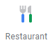
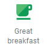
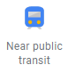
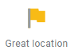
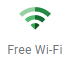

About us
Welcome to JotunHotel, our passion is to connect our guests to the very best. Our hotel offer extraordinary experiences, with affordable price you are able to experience a great service, an unforgettable sweet memories. JotunHotel is the perfect place for those who appreciate high-quality services and cordial and friendly atmosphere.
Why choose us?
    Your perfect escape
Star Hotel Kuala Lumpur, an Exclusive Business Hotel comprises 561 rooms consists of Superior, Deluxe, Club, Suites and elegantly decorated presidential suites of impeccable standards.
Also synonymous with the brand, the extensive range of comprehensive business facilities available targeting corporate guests from various business sectors. Renowned for the convenient and strategic locations within prominent business district and connected to Kuala Lumpur iconic landmark, the World Trade Centre Kuala Lumpur and Sunway Putra Shopping Mall.
The hotel is easily accessible via the LRT (Light Rail Transit) station and the Putra Commuter Station. It is 15 minutes away from KL Sentral, the transit hub for major public transport in the city. It is 60 minutes to Kuala Lumpur International Airport and 45 minutes to Sultan Abdul Aziz Shah Airport, Subang.
Jalan Putra 50350, Kuala Lumpur
info@jotunhotel.com.my
+604 2544422
Located in a prominent business district and connected to Kuala Lumpur iconic landmark, the World Trade Centre Kuala Lumpur and Sunway Putra Shopping Mall.
Seri Pacific Hotel Kuala Lumpur is approximately 60 minutes drive from Kuala Lumpur International Airport.
Strategically located approximately ten minutes away from the ‘Golden Triangle’ which is known to be Kuala Lumpur’s business district where you will also find a number of prestigious shopping and entertainment complexes.
Getting Here:
10 minutes away from Golden Triangle
1 minute walk to Star Light Rail Transit (LRT) station
5 minutes walk away from Komuter Train station
10 – 15 minutes drive from KL Sentral Station
60 minutes drive from Kuala Lumpur International Airport
One station from Star LRT station to connect to KL Inner City Monorail system
What's Nearby:
3 mins away from Sunway Putra Mall (Opposite)
2.4km to KLCC Twin Towers
2.7km to Islamic Art Museum
2.9Km to Institut Jantung Negara
17 mins to Chow kit Market
17 mins to Jalan Tuanku Abdul Rahman
1.4km to Damai Serive Hospital Kuala Lumpur
2.1km to Hospital Besar Kuala Lumpur
4.8km to Sentul KL Performing Arts Centre (KL PAC)
4.6km to Taman Tasik Titiwangsa
created with
Website Builder Software .